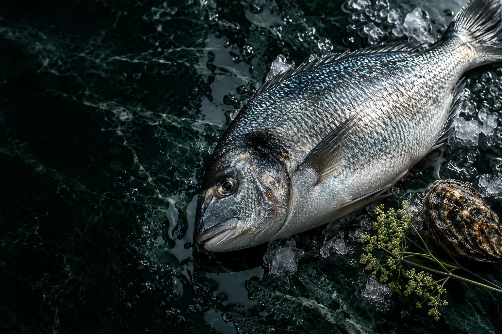

LA BELLEZZA DI SCEGLIERE BENE
Il mare.In ognidettaglio.
Pesce fresco, crostacei e molluschi.
La cura di una pescheria.
La sensibilità di un atelier.
Il mare non chiede di essere reinventato. Solo di essere scelto, conosciuto, rispettato.
NERÈA è l’incontro tra la bellezza della materia prima e il sapere di chi la sceglie. Pesce intero, tagli, crostacei e molluschi: il nostro modo di immaginare la pescheria.
La nostra essenza ↗
Dal mare.
Al tuo banco.
Un luogo dove fermarsi, chiedere,
scoprire qualcosa di buono.
Materia prima.
Emozione pura.
Quattro espressioni del mare.
Una selezione da scoprire, una cucina da immaginare.
Nessun prodotto trovato.
IV / L’ARTE DELLA SCELTA
La differenza
è in ciò che
riconosci.
Un riflesso, una consistenza, il momento giusto. La qualità comincia con uno sguardo attento e continua con un gesto fatto bene.
Conoscere l’origine.
Ascoltare la stagione.
Avere cura della materia.
PER CHI IL MARE LO PORTA IN TAVOLA, OGNI GIORNO.
La tua cucina.
Il nostro mare.
Ristorazione, ospitalità e progetti gastronomici.
La stessa sensibilità, una selezione pensata per il tuo mestiere.
IL PROSSIMO INCONTRO
Ci vediamo
al banco.
↗Una cassetta di mare, una ricetta, un’idea.
Cominciamo da ciò che ti piace.
ESPERIENZA PORTFOLIO · RICHIESTE DIMOSTRATIVE, NESSUN ORDINE REALE